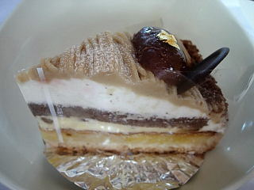
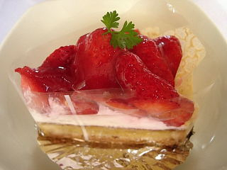

ガレットのモンブランと苺畑
2008/04/26
買った時はそう思わなかったんですが、このモンブランと苺畑は土台が同じで、上が違う商品でした。


土台のタルトが厚くて固いのが一番特徴的だなと思いました。
土台がしっかりしているので、上に乗るクリームも多いですね。
苺や栗が主役なんですが、私はそっちの味よりもクリームの下の、タルトのしっとりとした所の味が好きでした。しっとりとしてて、甘いパウンドケーキみたいで好きでした。
島根県松江市学園1丁目1-15
2008/04/26
買った時はそう思わなかったんですが、このモンブランと苺畑は土台が同じで、上が違う商品でした。


土台のタルトが厚くて固いのが一番特徴的だなと思いました。
土台がしっかりしているので、上に乗るクリームも多いですね。
苺や栗が主役なんですが、私はそっちの味よりもクリームの下の、タルトのしっとりとした所の味が好きでした。しっとりとしてて、甘いパウンドケーキみたいで好きでした。
新しく出来たケーキ屋さんです。大通りに面したお店ではないので、偶然見つける可能性は低いですね。
でも近くに公園があって、見通しのいい場所だったので、探しやすかったです。
ショーケース内のケーキの見た目が綺麗でいいですね。どれにしようか？って迷いながら選べました。
私が一番おいしそうに見えたのは、いちじくのショートケーキだったんですが、イチジクの赤い色がとても綺麗で美味しそうでした。
マイルドな甘さのケーキで、上から下にプスって切って食べると個々の味がまとまって美味しかったです。ちまちま食べない方がいいですね。
お店に置いてあったチラシにもバランスの良さを考えて作っているみたいな事が書いてあったんですが、まさにそんな感じでした。
他に洋酒の効いたチョコのケーキを食べたんですが、コーヒーと一緒にのんびりちびちび食べたいような濃い味で、好きな味でした。冬になったらまた買いに行きたいです。